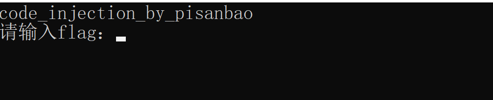
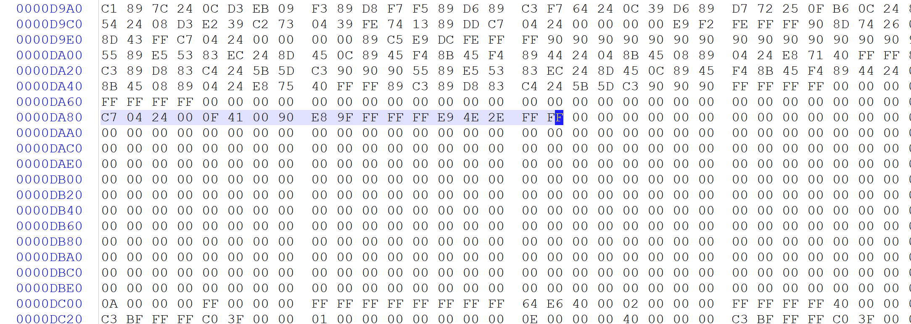
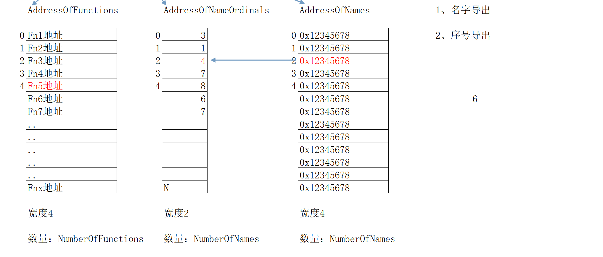
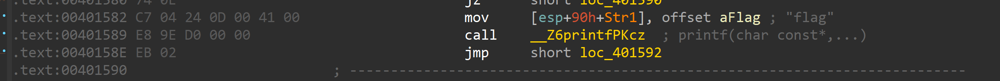
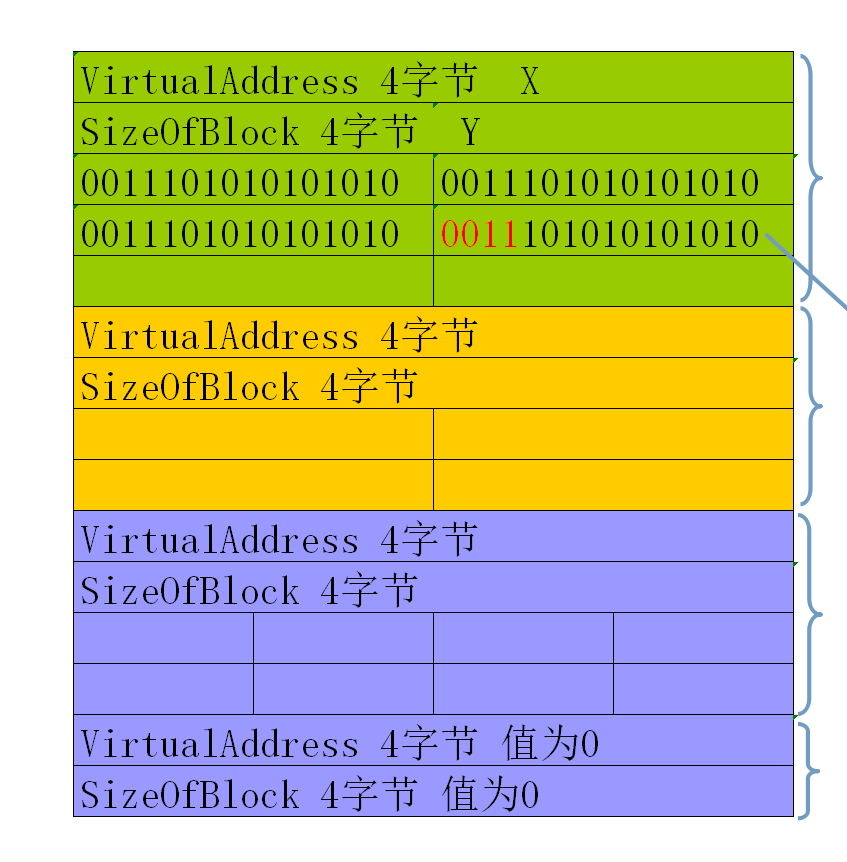
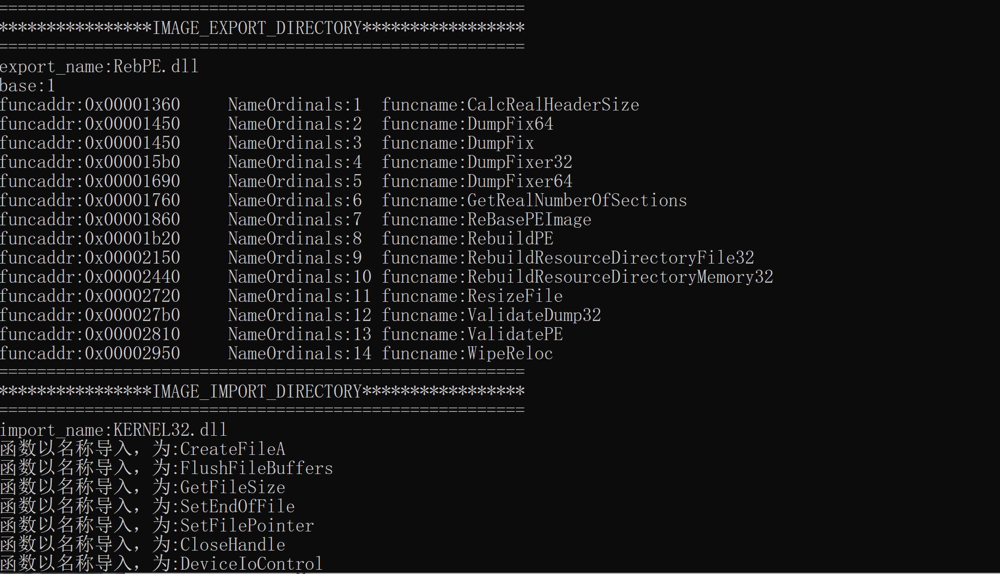
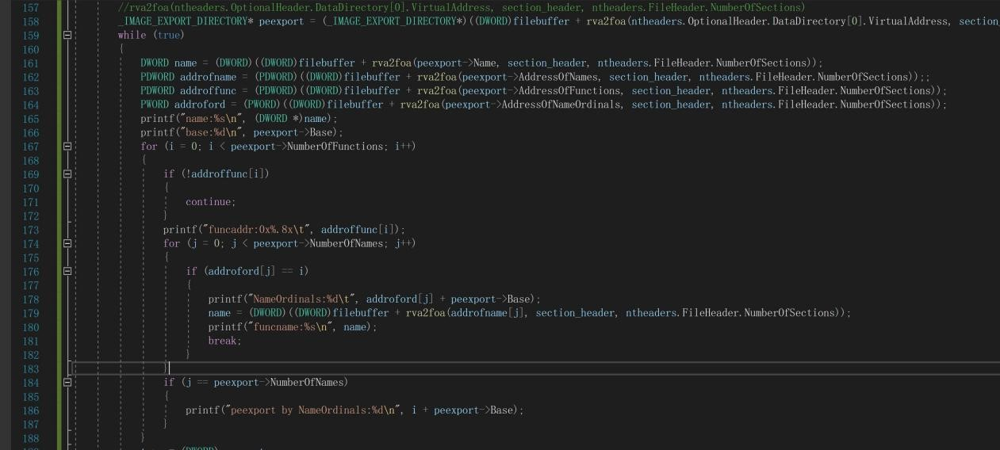

详细的记录一波pe有关知识，便于以后复习
DOS头
typedef struct _IMAGE_DOS_HEADER { // DOS .EXE header
WORD e_magic; // Magic number
WORD e_cblp; // Bytes on last page of file
WORD e_cp; // Pages in file
WORD e_crlc; // Relocations
WORD e_cparhdr; // Size of header in paragraphs
WORD e_minalloc; // Minimum extra paragraphs needed
WORD e_maxalloc; // Maximum extra paragraphs needed
WORD e_ss; // Initial (relative) SS value
WORD e_sp; // Initial SP value
WORD e_csum; // Checksum
WORD e_ip; // Initial IP value
WORD e_cs; // Initial (relative) CS value
WORD e_lfarlc; // File address of relocation table
WORD e_ovno; // Overlay number
WORD e_res[4]; // Reserved words
WORD e_oemid; // OEM identifier (for e_oeminfo)
WORD e_oeminfo; // OEM information; e_oemid specific
WORD e_res2[10]; // Reserved words
LONG e_lfanew; // File address of new exe header
} IMAGE_DOS_HEADER, *PIMAGE_DOS_HEADER;
Dos头如上，比较重要的就是俩个一个是magic num MZ还有一个是e_lfanew为nt头开始的偏移
e_lfanew往下到pe开始处既是dos存根用来兼容dos的，在dos上运行时打出那一句话，因为基本不会用到通常会塞点邪恶的东西在这之间
Nt头
typedef struct _IMAGE_NT_HEADERS {
DWORD Signature;
IMAGE_FILE_HEADER FileHeader;
IMAGE_OPTIONAL_HEADER32 OptionalHeader;
} IMAGE_NT_HEADERS32, *PIMAGE_NT_HEADERS32;
开头的签名就是PE
紧跟着俩结构体分别是文件头和可选文件头
typedef struct _IMAGE_FILE_HEADER {
WORD Machine; #机器码，表示的是运行平台
WORD NumberOfSections; #节数目
DWORD TimeDateStamp; #时间戳
DWORD PointerToSymbolTable;
DWORD NumberOfSymbols; #符号表数量
WORD SizeOfOptionalHeader; #可选文件头大小
WORD Characteristics; #文件属性，转成二进制每个位代表了每个属性，具体自行百度
} IMAGE_FILE_HEADER, *PIMAGE_FILE_HEADER;
typedef struct _IMAGE_OPTIONAL_HEADER {
WORD Magic;
BYTE MajorLinkerVersion;
BYTE MinorLinkerVersion;
DWORD SizeOfCode;
DWORD SizeOfInitializedData;
DWORD SizeOfUninitializedData;
DWORD AddressOfEntryPoint; #重点，入口处
DWORD BaseOfCode;
DWORD BaseOfData;
DWORD ImageBase; #基地址，内存镜像
DWORD SectionAlignment; #内存对齐
DWORD FileAlignment; #文件对齐
WORD MajorOperatingSystemVersion;
WORD MinorOperatingSystemVersion;
WORD MajorImageVersion;
WORD MinorImageVersion;
WORD MajorSubsystemVersion;
WORD MinorSubsystemVersion;
DWORD Win32VersionValue;
DWORD SizeOfImage; #内存中整个pe文件映射尺寸
DWORD SizeOfHeaders; #头+节表按照文件对其后的大小
DWORD CheckSum; #校验值
WORD Subsystem;
WORD DllCharacteristics;
DWORD SizeOfStackReserve;
DWORD SizeOfStackCommit;
DWORD SizeOfHeapReserve;
DWORD SizeOfHeapCommit;
DWORD LoaderFlags;
DWORD NumberOfRvaAndSizes; #目录项数目
IMAGE_DATA_DIRECTORY DataDirectory[IMAGE_NUMBEROF_DIRECTORY_ENTRIES];
} IMAGE_OPTIONAL_HEADER32, *PIMAGE_OPTIONAL_HEADER32;
节表
IMAGE_SECTION_HEADER STRUCT
BYTE Name[IMAGE_SIZEOF_SHORT_NAME]; // 8个字节的节区名称
union Misc
DWORD PhysicalAddress;
DWORD VirtualSize; //节区的尺寸
ends
DWORD VirtualAddress; // 节区的 RVA 地址
DWORD SizeOfRawData; // 在文件中对齐后的尺寸
DWORD PointerToRawData; // 在文件中的偏移量
DWORD PointerToRelocations; // 在OBJ文件中使用，重定位的偏移
DWORD PointerToLinenumbers; // 行号表的偏移（供调试使用地）
WORD NumberOfRelocations; // 在OBJ文件中使用，重定位项数目
WORD NumberOfLinenumbers; // 行号表中行号的数目
DWORD Characteristics; // 节属性如可读，可写，可执行等
IMAGE_SECTION_HEADER ENDS
前面的name存放节名称如.text .data
下面来说一下pe文件的执行过程
\1. Filebuffer:吧文件读入内存
\2. 申请4Gb虚拟内存
\3. Imagebuffer:内存对齐后映射
\4. 重定位后改ip指向entry
\5. 页错误后加载到物理内存
\6. 开始执行
有个小坑就是VirtualSize，是否不大于SizeOfRawDatal？
因为SizeOfRawData是节区在文件中对齐后的大小，而VirtualSize只是节区的大小，所以想当然的就有结论VirtualSize<=SizeOfRawDatal
然而事实并非如此。。。一个典型的例子就是bss段数据，未初始化的全局变量在文件中并不会给他分配大小，但当加载入内存时会给其分配，而VirtualSize表示的就是在内存中的大小
代码注入实战
简单的代码注入
在.text末尾多余处加入自己的代码
我这边以cgctf第一道re为例子

Rodata处加上你的字符串
然后再text末尾加上机器码

改ep为你的代码偏移处然后执行，最后jmp跳回oep
算是复习一波pe文件结构
当然处理方式还有好多，直接在text节后增加的话代码量有限，可以通过新增节的方式，比如吧dos存根抹去，nt头转移到dos存根那，改dos头最后一个，就可以给新增节留出空间，32位一个节40字节，还需要40字节用0填充这样比较稳定。
或者用更稳的方法直接扩大节，扩大最后一个节并修改属性，也可以合并节然后有新的空间给自定节用。
接下去主要复习一波表
在可选头最后有个结构体数组，大小16，就是16个表，其中有一个是备用的。
#define IMAGE_DIRECTORY_ENTRY_EXPORT 0 // Export Directory
#define IMAGE_DIRECTORY_ENTRY_IMPORT 1 // Import Directory
#define IMAGE_DIRECTORY_ENTRY_RESOURCE 2 // Resource Directory
#define IMAGE_DIRECTORY_ENTRY_EXCEPTION 3 // Exception Directory
#define IMAGE_DIRECTORY_ENTRY_SECURITY 4 // Security Directory
#define IMAGE_DIRECTORY_ENTRY_BASERELOC 5 // Base Relocation Table
#define IMAGE_DIRECTORY_ENTRY_DEBUG 6 // Debug Directory
// IMAGE_DIRECTORY_ENTRY_COPYRIGHT 7 // (X86 usage)
#define IMAGE_DIRECTORY_ENTRY_ARCHITECTURE 7 // Architecture Specific Data
#define IMAGE_DIRECTORY_ENTRY_GLOBALPTR 8 // RVA of GP
#define IMAGE_DIRECTORY_ENTRY_TLS 9 // TLS Directory
#define IMAGE_DIRECTORY_ENTRY_LOAD_CONFIG 10 // Load Configuration Directory
#define IMAGE_DIRECTORY_ENTRY_BOUND_IMPORT 11 // Bound Import Directory in headers
#define IMAGE_DIRECTORY_ENTRY_IAT 12 // Import Address Table
#define IMAGE_DIRECTORY_ENTRY_DELAY_IMPORT 13 // Delay Load Import Descriptors
#define IMAGE_DIRECTORY_ENTRY_COM_DESCRIPTOR 14 // COM Runtime descriptor
如上图
每个结构体占8字节俩个dw
typedef struct _IMAGE_DATA_DIRECTORY {
DWORD VirtualAddress; 虚拟地址
DWORD Size; 大小
} IMAGE_DATA_DIRECTORY, *PIMAGE_DATA_DIRECTORY;
如上
Va指向了内存对齐后的改表地址
导出表
typedef struct _IMAGE_EXPORT_DIRECTORY {
DWORD Characteristics;
DWORD TimeDateStamp; //时间戳
WORD MajorVersion;
WORD MinorVersion;
DWORD Name; //模块名
DWORD Base; //序号基数
DWORD NumberOfFunctions; //导出函数数目(不一定准确)
DWORD NumberOfNames; //导出函数名字数目
DWORD AddressOfFunctions; // 函数地址表
DWORD AddressOfNames; // 函数名称表数量由NumberOfNames决定
DWORD AddressOfNameOrdinals; // 函数序号表数量由NumberOfNames决定
} IMAGE_EXPORT_DIRECTORY, *PIMAGE_EXPORT_DIRECTORY;

导出表结构如上
前面几个不需要多管，主要看下面的，name是指模块名比如xxx.dll,base是指序号基数后面会用到，NumberOfFunctions是不一定准确的，她是用最大序号减最小序号+1来求得(这边序号不是指AddressOfNameOrdinals序号，是指导出函数的序号
这边俩个表一个函数地址表还有一个函数名称表，函数地址表取决于导出函数数目，而函数名称表取决于导出名字数目，这边有个很神奇的东西，因为函数可以通过符号导出，比如说你编程往往函数名称就和他实现的功能一样，而你不想让别人知道你这个函数的功能就可以通过符号导出，这样的话就不会再函数名字表里出现了，但是在函数地址表里还会有，那么就会有个问题，是不是函数地址表总是比函数名字表来的大呢？
这是不一定的，举个例子你有俩个函数名字都指向了一个地址是完全可以实现的，这样就有可能名称表比地址表来得大。
函数名导出寻找
比如知道函数名为aaa
先会从AddressOfNames遍历寻找到对应地址下标
再去AddressOfNameOrdinals寻找对应下标的值
以其为下标在AddressOfFunctions寻找就是该函数地址
序号导出寻找
首先要有个概念就是AddressOfNameOrdinals里的不是函数序号
要加上base才是序号
那根据序号寻找就很轻松了，吧函数序号减去base为下标去AddressOfFunctions取出地址就是该函数地址
逆推
首先从函数地址开始AddressOfFunctions
遍历地址是否为0，不为0取出下标，去AddressOfNameOrdinals遍历寻找
如果找到值等于下标的，取出该值下标去AddressOfNames找到对应地址，取地址获取函数名
当然如果没有找到，直接吧该下标加上base就为函数的导出序号
重定位表
重定位表的作用很明显，一般在dll里用的比较多
以南邮ctf第一题签到题为例

重点关注机器码
Flag寻址的时候是绝对寻址而call printf函数时用的时相对寻址
后面机器码加上下一行指令地址即为函数地址
Flag寻址是更具pe的imagebase去算的，但是如果出现一个情况，特别是在dll里出现比较多，就是俩个dll映射基地址都是0x10000000,这样就会产生重叠，所以必须有1个dll映射到其他地址，一般都是下一个0x10000，这是模块对齐的大小，但不一定啊和内存对齐一样。
这就是重定位表需要的原因，来进行重定位
| typedef struct _IMAGE_BASE_RELOCATION { | ||||||
|---|---|---|---|---|---|---|
| DWORD VirtualAddress; | ||||||
| DWORD SizeOfBlock; | ||||||
| } IMAGE_BASE_RELOCATION; | ||||||
| typedef IMAGE_BASE_RELOCATION ，* PIMAGE_BASE_RELOCATION; |
结构如上
SizeOfBlock是指当前block大小
每个block大小就是一个内存页0x1000为单位
该页上有多少需要重定位的地方

通过判断最后一个结构的VirtualAddress与SizeOfBlock都为0来判断是否结束
内存页中的页大小是0x1000，也就是2的12次方就可以表示一个页内所有的偏移地址，具体项的宽度是16字节 高四位代表类型：值位3 代表的是需要修改的数据 值位0代表的是用于数据对齐的数据，可以不用修改，也就是说只需要关注高四位的值为三的就可以了
Block下面的高四位是个标志位后面是地址
Virtualaddress + 低十二位就是需要修改的地址
导入表
导入表涉及到iat表和int表
具体看时间戳
typedef struct _IMAGE_IMPORT_DESCRIPTOR {
union {
DWORD Characteristics; // 0 for terminating null import descriptor
DWORD OriginalFirstThunk; // RVA to original unbound IAT (PIMAGE_THUNK_DATA)
} DUMMYUNIONNAME;
DWORD TimeDateStamp; // 0 if not bound,
// -1 if bound, and real date\time stamp
// in IMAGE_DIRECTORY_ENTRY_BOUND_IMPORT (new BIND)
// O.W. date/time stamp of DLL bound to (Old BIND)
DWORD ForwarderChain; // -1 if no forwarders
DWORD Name;
DWORD FirstThunk; // RVA to IAT (if bound this IAT has actual addresses)
} IMAGE_IMPORT_DESCRIPTOR;
typedef IMAGE_IMPORT_DESCRIPTOR UNALIGNED *PIMAGE_IMPORT_DESCRIPTOR;
Name为导入库的名称rva，第一项指向了int表
typedef struct _IMAGE_THUNK_DATA32 {
union {
DWORD ForwarderString; // PBYTE
DWORD Function; // PDWORD
DWORD Ordinal;
DWORD AddressOfData; //RVA 指向_IMAGE_IMPORT_BY_NAME
} u1;
} IMAGE_THUNK_DATA32;
typedef IMAGE_THUNK_DATA32 * PIMAGE_THUNK_DATA32;
Int表的值如果最高位为0，就是name的rva
否则去除最高位剩下的就是导入序号
typedef struct _IMAGE_IMPORT_BY_NAME {
WORD Hint; //可能为0，编译器决定，如果不为0，是函数在导出表中的索引
BYTE Name[1]; //函数名称，以0结尾，由于不知道到底多长，所以干脆只给出第一个字符，找到0结束
} IMAGE_IMPORT_BY_NAME, *PIMAGE_IMPORT_BY_NAME;
名称第一个是hint
然后是函数名
再看看iat表
当导入表时间戳为0时iat和int值都一样
为-1是iat是函数的真实地址，但很少有，因为当dll映射地址改变的时候需要重定位，一般notepad就是这样，好处就是打开快，不需要再根据int表去吧地址写入iat
//最后一个结构全0表示绑定导入表结束
typedef struct _IMAGE_BOUND_IMPORT_DESCRIPTOR {
DWORD TimeDateStamp; //表示绑定的时间戳，如果和PE头中的TimeDateStamp不同则可能被修改过
WORD OffsetModuleName; //dll名称地址
WORD NumberOfModuleForwarderRefs; //依赖dll个数
// Array of zero or more IMAGE_BOUND_FORWARDER_REF follows
} IMAGE_BOUND_IMPORT_DESCRIPTOR, *PIMAGE_BOUND_IMPORT_DESCRIPTOR;
下面看看绑定导入表
时间戳是pe时间戳，如果与绑定的时间戳不一样说明被更新了需要重定位
NumberOfModuleForwarderRefs表示下面紧接着跟了多少个如下结构
typedef struct _IMAGE_BOUND_FORWARDER_REF {
DWORD TimeDateStamp; //时间戳，同样的作用检查更新情况
WORD OffsetModuleName; //dll名称地址
WORD Reserved; //保留
} IMAGE_BOUND_FORWARDER_REF, *PIMAGE_BOUND_FORWARDER_REF;
OffsetModuleName加上绑定导入表首地址才是name的rva

自己编程写了下，可惜不小心被删除了。。。只剩下俩张截图

这个是导出表写法截图
到这pe算是告一段落了
顺带复习了波程序员的自我修养